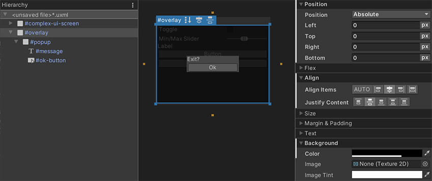

Positioning elements
Relative position and flexbox
UI Toolkit uses a modified version of Yoga, an implementation of the Flexbox layout engine. Flexbox is a common CSS layout engine. Some main style properties are:
-
Flex > Direction (
flex-directionin USS): Set the layout direction of which elements, or the main-axis. The default iscolumnand that means that, without any other overrides, the child element under a parent element with this style property will appear above the second child element in a column. -
Flex > Grow (
flex-growin USS): This property defines how an element should grow in the main-axis. It’s a ratio that’s shared with all other siblings of the same parent. This property is useful when trying make an element stretch to take up the entire size of its parents (minus any siblings). To do this, set the Flex > Grow value to1. If you have two siblings withflex-growset to1, they will each take 50% of the parent’s available size along the main-axis. -
Align > Align Items (
align-itemsin USS): This property defines the alignment of elements in the cross-axis, or the perpendicular axis to the main-axis. For example, if you have two Buttons in aVisualElementthat hasflex-direction: columnandalign-items: flex-endset, the two Buttons will squish against the container’s right edge. The options foralign-itemshave names likeflex-startandflex-endbecause they depend on the value offlex-direction. -
Align > Justify Content (
justify-contentin USS): This property defines the alignment of elements in the main-axis. For example, if you have two Buttons in aVisualElementthat hasflex-direction: columnandjustify-content: flex-endset, the two Buttons squish against the container’s bottom edge. The options forjustify-contentare named likeflex-startandflex-endbecause they depend on the value offlex-direction.
If the selected element has child elements, you can toggle flex-related style properties in the ViewportThe user’s visible area of an app on their screen.
See in Glossary using toggles in the header. The image below shows the options available for the #menu element:

It’s recommended to learn how Flexbox works. See the Flexbox guide for more information.
You can create complex dynamic layouts by using a combination of the above Flexbox style properties and a hierarchy of VisualElements. Here’s an example of a layout that anchors a Button on the bottom-right edge of the screen:

The UXML for this layout, showing the inline styles set on each container VisualElement, is below:
<ui:UXML xmlns:ui="UnityEngine.UIElements" xmlns:uie="UnityEditor.UIElements">
<ui:VisualElement name="screen-is-blue" style="flex-grow: 1; justify-content: flex-end; background-color: blue;">
<ui:VisualElement name="toolbar-is-orange" style="align-items: flex-end; background-color: orange;">
<ui:Button text="Button" display-tooltip-when-elided="true" />
</ui:VisualElement>
</ui:VisualElement>
</ui:UXML>
The containers are colored to reveal their shape. You can use nested VisualElement containers to achieve any dynamic layout without resorting to explicitly setting the position and size of each element. This keeps the layout dynamic and automatically adjusts to the larger container changing size, like the screen changing size.
Absolute position
UI Builder also exposes Position style properties. To use the Position style properties you must set the Position > Position type to Absolute. This Absolute mode makes an element invisible to the default Flexbox-based layout engine. It’s as if it no longer takes any space. Absolute position elements will appear on top of any siblings that are still using Relative position.
It’s discouraged to use Absolute position mode, as it bypasses the built-in layout engine in UI(User Interface) Allows a user to interact with your application. Unity currently supports three UI systems. More info
See in Glossary Toolkit. It might also lead to high-maintenance UI where changing the overall layout would require manually updating individual elements.
While using Absolute position, you can use the Position > Left, Top, Right, Bottom style properties to offset and size the element from the respective edges of its parent. This doesn’t sett absolute coordinates on the screen but sets offsets relative to the parent element. You can still use Relative mode to position the parent element. If you set both a Left offset and a Right offset, the Width style property of the element is ignored and the computed width will now come from the following formula:
element-computed-width = parent-width - left-offset - right-offset
Left, Top, Right, Bottom can also be interpreted as anchors. For example, you can anchor a Button on the bottom-right of the screen:
The UXML below displays the inline styles:
<ui:UXML xmlns:ui="UnityEngine.UIElements" xmlns:uie="UnityEditor.UIElements">
<ui:Button text="Button" style="position: absolute; right: 0; bottom: 0;" />
</ui:UXML>
With positioning, there is a difference between having Left set to 0 and having Left unset:
-
Left set to 0means set an offset of 0. -
Left unsetdoesn’t set any offset and lets other style properties define the width or height of the element.
You can also modify these offset style properties directly in the Canvas via additional resize handles on each edge and corner of the element’s blue selection border. It’s important to differentiate between what’s set and what’s unset, so the Canvas also includes “anchor” toggles as orange squares off each side of the element. The Canvas handles will adjust which style properties are set when resizing the element visually, depending on which “anchors” are set. For example, say you are resizing the element in the Canvas via its right-border handle:
- If you set both Left and Right properties, the handle will update the Right property.
- If you set Left but not Right, the handle will update the Width property.
Use both Relative and Absolute
One of the legitimate use cases for Absolute position mode is for overlays. It’s useful to overlay some complex UI on top of other complex UI, such as a popup or a dropdown. You can use Absolute position only for the overlay container itself, while continuing to use Relative mode inside the overlay. Here’s an example of a simple centered popup:
 And here’s the UXML for your reference:
<ui:UXML xmlns:ui="UnityEngine.UIElements" xmlns:uie="UnityEditor.UIElements">
<ui:VisualElement name="complex-ui-screen">
<ui:Toggle label="Toggle" />
<ui:MinMaxSlider picking-mode="Ignore" label="Min/Max Slider" min-value="10" max-value="12" low-limit="-10" high-limit="40" />
<ui:Label text="Label" />
<ui:Button text="Button" />
<ui:Button text="Button" />
</ui:VisualElement>
<ui:VisualElement name="overlay" style="position: absolute; left: 0; top: 0; right: 0; bottom: 0; background-color: rgba(0, 0, 0, 0.71); align-items: center; justify-content: center;">
<ui:VisualElement name="popup" style="background-color: rgba(70, 70, 70, 255);">
<ui:Label text="Exit?" name="message" />
<ui:Button text="Ok" name="ok-button" style="width: 108.3333px;" />
</ui:VisualElement>
</ui:VisualElement>
</ui:UXML>
The example above highlights the use of Absolute position. Set all Position > Left, Top, Right, Bottom to 0, so the position is 0 pixels away from the edges of the screen. This makes the #overlay element overlap the #complex-ui-screen container element. You can also set a semi-transparent background to the #overlay element to make the other UI appear darkened. Use #overlay to set Relative position to center our #popup container VisualElement.